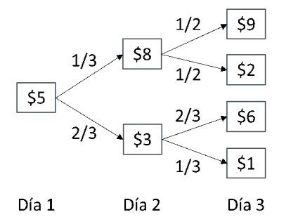
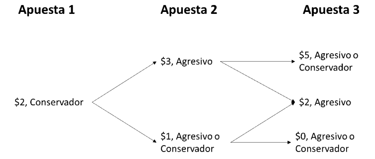

18. Programación Dinámica#
En este capítulo hablaremos sobre el método de solución denominado programación dinámica. Este es aplicado para resolver problemas de decisión en el tiempo.
18.1. Introducción#
Un problema de decisión en el tiempo se puede dividir entre un problema determinístico o estocástico, dependiendo de la dinámica subyacente a las transiciones entre estados de una época de decisión a otra, por lo que la programación dinámica también se puede dividir entre determinística (DDP por sus siglas en inglés) y estocástica (SDP por sus siglas en inglés), donde un DDP es un caso particular de un SDP en el que todas las probabilidades de transición son 0 o 1. Enunciaremos de nuevo los componentes que debe tener un proceso de decisión.
18.2. Componentes#
\(E = \{ 1,\ldots,\ T\}\) : Conjunto de épocas donde se toma una decisión.
\(X_{t}\): Variable que representa el sistema en cada época \(t \in E\).
\(S_{t}\): Conjunto de posibles valores (estados) que puede tomar la variable en la época de observación \(t \in E\).
\(A_{t}(i):\) Conjunto de decisiones que es posible tomar cuando el sistema está en la época \(t \in E\) y la variable toma un valor \(i \in S_{t}\).
\(c_{t}(i,a)\): Retorno inmediato dado que se toma la decisión \(a \in A_{t}(i)\), en la época \(t \in E\) y el sistema se encuentra en el estado \(i \in S_{t}\).
\(p_{t}(j|i,a)\): Probabilidad que al tomar la decisión \(a \in A_{t}(i)\), en la época \(t \in E\) y el sistema está en el estado \(i \in S_{t}\), en la época \(t + 1\) el sistema pase a estar en el estado \(j \in S_{t + 1}\).
Cabe notar que, para programación dinámica determinística, el componente de probabilidades no se tiene en cuenta y más bien se define:
\(s_{t + 1}(i,a)\): Estado en el que se encuentra el sistema en \(t + 1\), dado que en \(t \in E\) está en el estado \(i \in S_{t}\) y se tomó la decisión \(a \in A_{t}(i)\).
18.3. Ecuaciones de Bellman#
Las ecuaciones de Bellman para cada uno de estos modelos se comportan de forma parecida. Para una programación dinámica determinística, la ecuación de Bellman se define como:
Donde se conoce exactamente el estado al que se pasará en la siguiente época al tomar una decisión. Así, el valor de tomar la decisión se puede pensar como el retorno inmediato, más los retornos futuros, que dependen del estado al que se llega al tomar dicha decisión. A diferencia de esto, en una programación dinámica estocástica, existe una probabilidad asociada a estar en un estado futuro, que depende de la decisión que se tome. Por tal motivo la ecuación de Bellman se define como:
De forma similar al caso determinístico, el valor de una decisión es el retorno inmediato, más el valor esperado de los retornos futuros, que dependen del estado al que se llega siguiendo la probabilidad dada por \(p_{t}(j|i,a)\).
18.4. Políticas Óptimas#
Utilizando programación dinámica, siempre se encuentra una o varias políticas óptimas para un problema. Si se encuentran varias, es porque cada una de estas es un óptimo alterno del problema. Claro está que la política óptima tiene una estructura diferente, dependiendo del modelo que se esté observando.
Para el caso de una programación dinámica determinística la política óptima está compuesta por una decisión para cada época, dado que en cada época sólo se puede estar en un único estado. Como un problema de decisión en el tiempo se puede representar en una red, esta política se asemeja a un camino más corto (si se está minimizando) o a un camino más largo (si se está maximizando) entre un nodo en la época inicial y un nodo en la época final del problema de decisión.
En la programación dinámica estocástica, la política óptima define una decisión para cada época \(t \in E\) y cada estado \(i \in S_{t}\). Esto último se debe a que no se conoce con certeza el estado del sistema en una época en particular. La estructura de la política se representa como un árbol de decisión, donde según la época y el estado del sistema, se tiene una o varias decisiones posibles (cuando existen óptimos alternos).
18.5. Programación Dinámica Estocástica: Parada Óptima#
Un caso particular de SDP se conoce como parada óptima, donde las decisiones consisten en parar o seguir. Cuando se decide parar, el problema termina en esa época y no hay estados a futuro. Si se decide seguir, el problema continúa. Dado esto, se consideran los siguientes cambios en los componentes:
\(A_{t}(i) = \{ parar,\ seguir\}\) \(\forall\ t \in E,\ i \in S_{t}\)
\(c_{t}(i,seguir) = 0\), \(\forall\ t \in E\ ,t < T,\ i \in S_{t}\)
Finalmente, la ecuación de Bellman se puede definir como:
Ejemplo 1
El día de hoy usted posee una acción y quiere decidir cuándo es mejor venderla durante un lapso de 3 días. Usted conoce como el valor de la acción se comportará en los siguientes periodos:

Usted desea maximizar el retorno que recibirá de la acción que posee. Si llega al tercer día y aún no ha vendido la acción, debe venderla en este periodo. Este es un problema de óptima parada, dado que tan pronto se vende la acción ya no necesitamos seguir observando el precio de la acción en el futuro y se recibirá el valor por la cual fue vendida.
Definimos primero los componentes del problema:
Épocas: Días 1 al 3
Variable: Precio de la acción en el día \(t \in E\)
Espacio de estados: \(S_{1} = \left\{ 5 \right\},\ S_{2} = \left\{ 3,8 \right\},\ {\ S}_{3} = \{ 1,2,6,9\}\)
Decisiones: \(A = \{ Vender\ (V),\ Esperar\ (E)\}\)
Retornos Inmediatos:
Probabilidades:
Para todos los demás casos las probabilidades serán cero.
Solucionemos la programación dinámica estocástica definiendo las ecuaciones de Bellman de este problema y utilizando inducción hacia atrás. Por tal motivo arrancamos en la última etapa de decisión:
Dado que en último periodo debe vender, no existe la decisión de esperar.
Finalmente, para la etapa 1, tenemos lo siguiente:
Podemos reconstruir la política óptima a partir de los resultados:
En el primer periodo es preferible esperar. En el segundo periodo, si la acción vale $8, se vende y si vale $3, se espera. Si se decidió esperar en el día dos, toca vender en el día 3. Esta política de decisión genera un valor esperado de $5.55 por vender la acción.
18.6. Programación Dinámica Estocástica: Maximización de Probabilidades#
Otro modelo interesante de programación dinámica estocástica es aquel que se utiliza para maximizar la probabilidad de un evento que se desea que ocurra. No existen en este caso retornos inmediatos sino hasta el último periodo de decisión, donde se observa la probabilidad que este evento realmente ocurra. Por tal motivo el siguiente cambio aparece en los componentes de este modelo:
\(c_{t}(i,a) = 0\) y \(c_{T}(i,a) \geq 0\)
Las ecuaciones de Bellman se comportan exactamente igual que en la definición general.
Ejemplo 2
Usted tiene $2 para ir a un casino y jugar en la ruleta. Cada turno usted puede apostar solo $1 y si puede decidir si jugar de una forma conservadora o agresiva. Si juega de una forma conservadora, se ganará un dólar adicional (le regresan $2) con una probabilidad de 1/2. Si juega de una forma agresiva, se ganará $2 adicionales (Le regresan $3$) con una probabilidad de 1/3. Si pierde, perderá el dólar que apostó. Tenga en cuenta que, si se queda sin plata, no puede jugar más. Usted jugará 3 veces y quiere maximizar la probabilidad que al final de los tres juegos, tenga $4 dólares o más.
Este problema se define de la siguiente forma:
Épocas: Las tres apuestas \(E = \{ 1,\ 2,\ 3\}\)
Variable: \(X_{t} = \text{Dinero disponible antes de la apuesta}\ t\).
Dado que se quiere maximizar la probabilidad de tener $4 dólares o más, en la variable siempre está la meta que se quiere cumplir.
Estados: \(S_{1} = \left\{ 2 \right\},\ S_{2} = \left\{ 4,3,1 \right\},\ S_{3} = \{ 6,5,4,3,2,0\}\)
Decisiones: Jugar agresivo o conservador.
Retornos Inmediatos: Como este modelo es de maximización de probabilidades, todos los retornos son 0, excepto en la última época, donde se busca la probabilidad que cumpla lo deseado:
Dado que, aunque pierda en el último periodo cuando tiene $5 o $6, sigue teniendo $4 o más, entonces la probabilidad que se cumpla el cometido es 1.
Probabilidades: Es obvio como las probabilidades afectan los estados cuando se toma alguna de las dos decisiones.
Utilizando programación dinámica con inducción hacia atrás, se encuentra que:
Para los periodos 1 y 2, no tenemos retornos inmediatos por lo que:
Entonces podemos construir el siguiente árbol de decisión que representa la política óptima:
